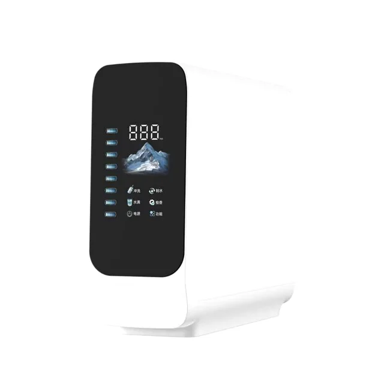
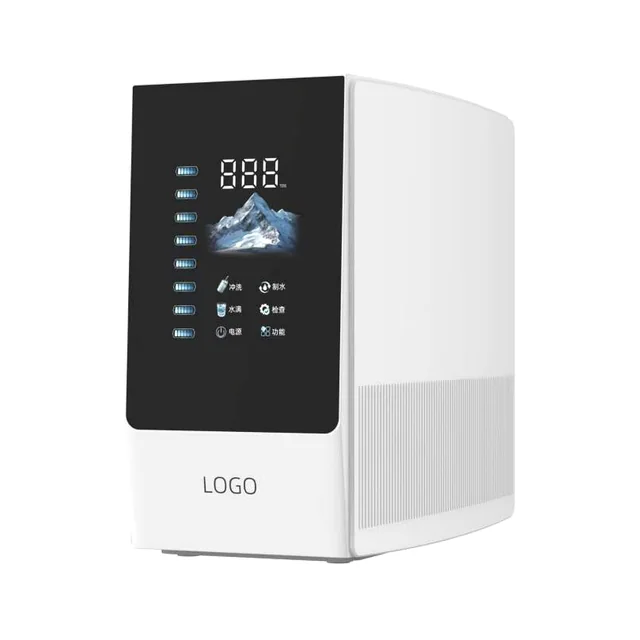
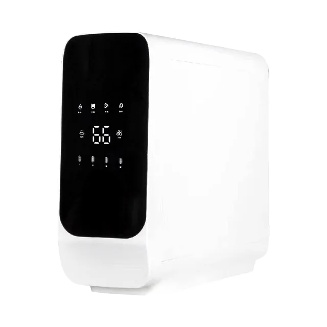
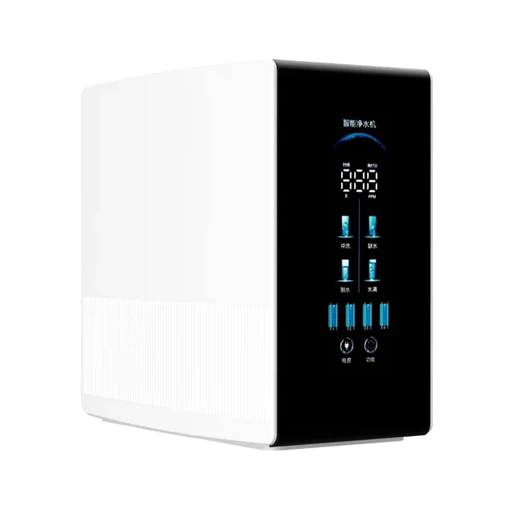
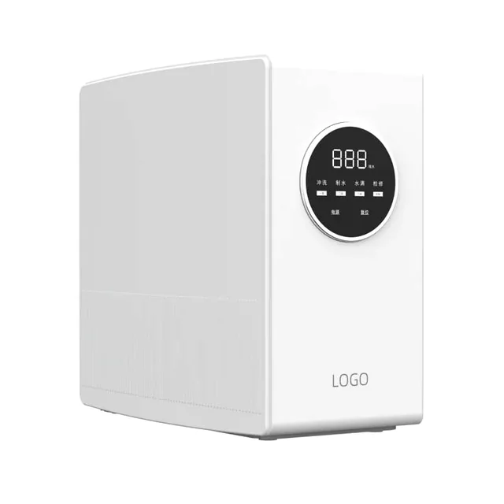

Smart RO Water Purifier 400G-1200G
Smart RO Water PurifierSmart RO Water Purifier 400G-1200G is a smart reverse osmosis water purifier for appliance brands and distributors that need 400G, 600G, 800G or 1200G options, real-time TDS display, filter life reminders and flexible under-sink or countertop installation. Key specifications include Pure Water Flow: 400G/600G/800G/1200G by order; TDS: The display panel shows water-quality status, TDS value and filter-life information, helping users plan cartridge replacement before performance drops..
Technical Specifications
Technical Specifications
| Item | Specification |
|---|---|
| Product Type | Smart RO Water Purifier 400G-1200G |
| Pure Water Flow | 400G/600G/800G/1200G by order |
| Application | Under-sink or countertop installation |
| TDS | The display panel shows water-quality status, TDS value and filter-life information, helping users plan cartridge replacement before performance drops. |
| Treatment Process | PP sediment + carbon prefiltration + RO membrane + post carbon, adjusted by project |
| Feed Water | Municipal tap water; inlet conditions are confirmed before quotation |
| OEM/ODM | Capacity, pump, RO membrane, filter set, housing color, logo position, panel language, manual and packaging can be customized for the target market. |
Smart RO Water Purifier
Smart RO Water Purifier





System Configuration
System Configuration
Compact smart RO system for under-sink or countertop installation with capacity options from 400G to 1200G.
| TDS | The display panel shows water-quality status, TDS value and filter-life information, helping users plan cartridge replacement before performance drops. |
|---|---|
| Project customization | Capacity, pump, RO membrane, filter set, housing color, logo position, panel language, manual and packaging can be customized for the target market. |
| Application | Home kitchens, apartments, offices, distributor programs and private-label appliances |
| Request OEM Quote | Send the required capacity, voltage, water source, installation style, logo, panel language, packaging and target market for evaluation. |
FAQ
FAQ
400G/600G/800G/1200G by order
The display panel shows water-quality status, TDS value and filter-life information, helping users plan cartridge replacement before performance drops.
Capacity, pump, RO membrane, filter set, housing color, logo position, panel language, manual and packaging can be customized for the target market.
Buyer notes for Smart RO Water Purifier 400G-1200G
For Smart RO Water Purifier 400G-1200G, use this model when the buyer needs a defined purifier configuration with practical installation details, replacement filter planning and export carton control. The page should answer how the unit fits into a kitchen, office or commercial drinking-water program before repeating broad RO or OEM claims.
Information to confirm
- Target daily use and required capacity
- Filtration stages and replacement filter bundle
- Cabinet, panel, faucet and packaging requirements
- Destination market documents and carton labeling
Buyer selection notes
Use Smart RO Water Purifier 400G-1200G when sourcing a smart RO water purifier 400G-1200G platform for modern kitchen programs. The useful comparison points are membrane capacity, TDS display accuracy, filter life reminder logic, installation space, replacement filter access and private-label control-panel artwork.
Details to confirm before quotation
- 400G, 600G, 800G or 1200G capacity target
- TDS display, filter life reminder and control-panel language
- Under-sink or countertop RO purifier installation space
- Logo, housing color, filter set and export carton artwork
Request OEM Quote
Send the required capacity, voltage, water source, installation style, logo, panel language, packaging and target market for evaluation.